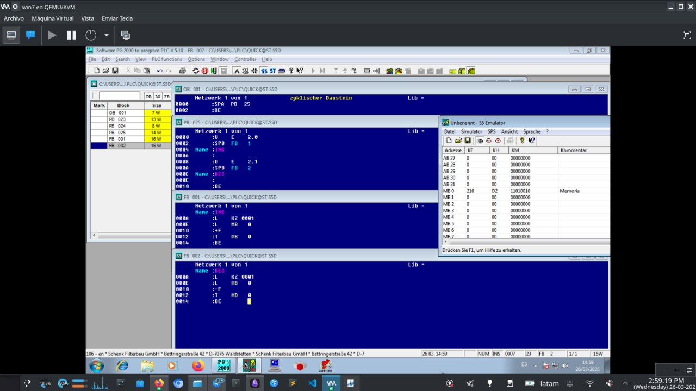
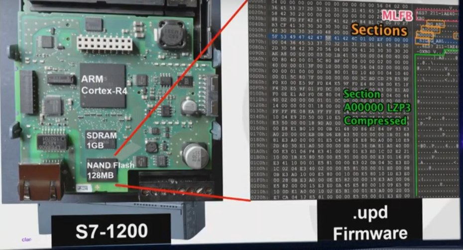
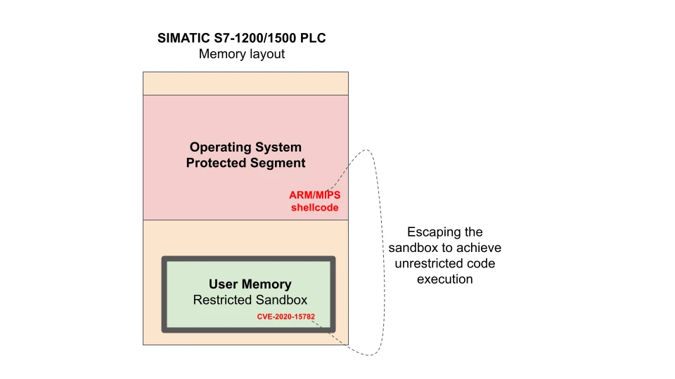
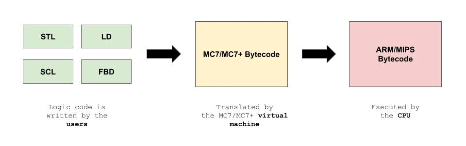
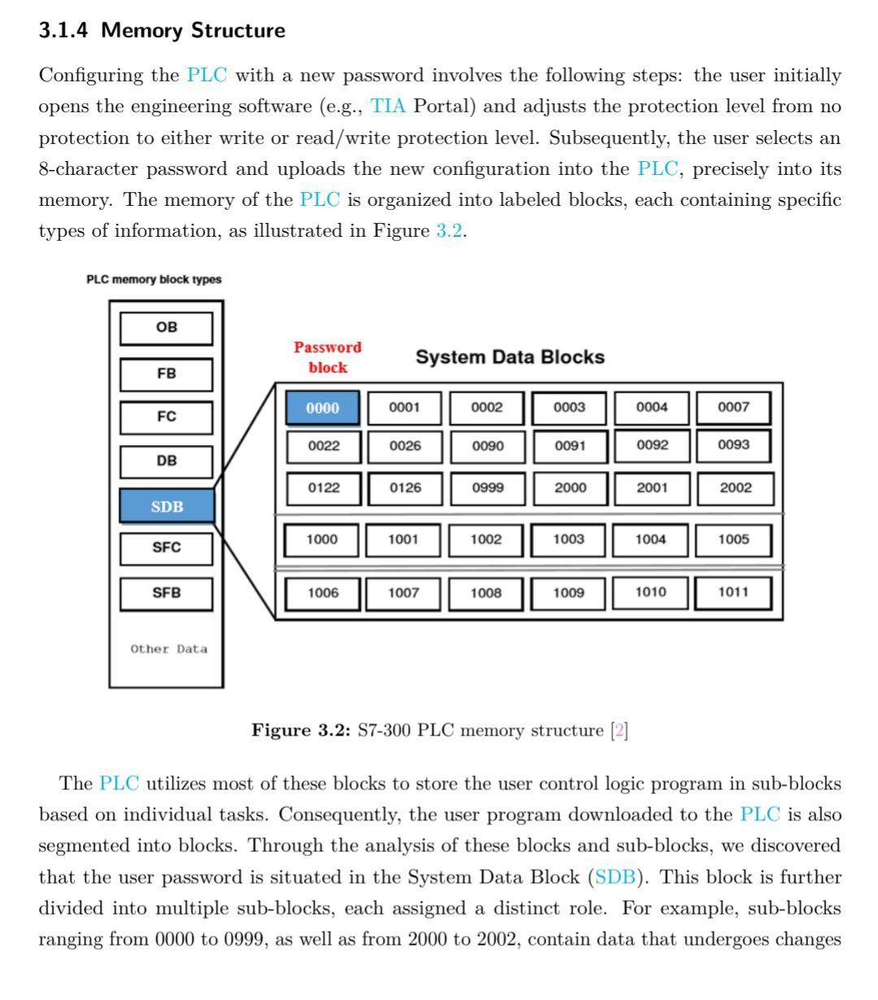
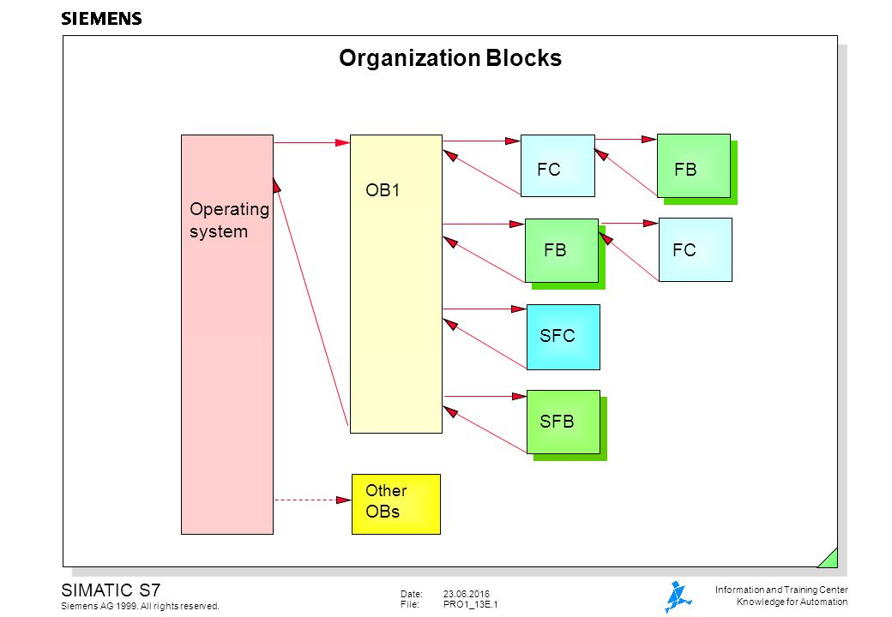

Exploit development OT: del AWL al shellcode en PLC Siemens
De reversing de AWL/MC7/MC7+ al exploit development: CVE-2020-15782 (Claroty Team82), sandbox escape con ejecución nativa ARM/MIPS en kernel ADONIS, ROP sobre MC7 y cuatro workshops sobre S7-1200.
/índice · 12 secciones
- Resumen técnico
- Por qué explotar un PLC no es explotar un PC
- AWL: el ensamblador de los autómatas
- Debajo del bytecode: ARM/MIPS y ADONIS
- Del AWL al shellcode
- ROP sobre MC7/MC7+: gadgets dentro de la VM
- Superficie de ataque en una planta real
- Casos reales: TRITON, Havex y CVE-2020-15782
- Laboratorio ICS: hardware, simuladores y red OT
- Talleres 1 y 2: shellcode y ROP
- Talleres 3 y 4: fuzzing y cadena completa
- Conclusión, roadmap y referencias
Nada de lo descrito aquí se aplica fuera de laboratorios controlados o sobre fallos ya corregidos y publicados (Siemens parcheó CVE-2020-15782 en 2021). Mi interés es doble: académico y de concienciación, porque las infraestructuras críticas siguen necesitando hardening urgente. Todo se apoya en investigación pública y pruebas sobre equipos propios o simuladores.
01. Resumen técnico
| Campo | Detalle |
|---|---|
| Plataformas objetivo | Siemens SIMATIC S5-95U, S7-300, S7-400, S7-1200 y S7-1500 |
| Bytecode | MC5 (S5) · MC7 (S7-300/S7-400) · MC7+ (S7-1200/S7-1500) |
| Sustrato hardware | Procesadores ARM o MIPS bajo el kernel propietario ADONIS |
| Vulnerabilidad central | CVE-2020-15782 (CVSS 8.1, CWE-119): escape del sandbox de la VM en S7-1200/1500, parcheado por Siemens en 2021 |
| Acceso inicial de la cadena | CVE-2020-6507: out-of-bounds write en V8, Chrome anterior a 83.0.4103.106 |
| Herramientas de reversing | JEB Pro, rz-libmc7 (rizin), Ghidra, ROPgadget, AFL++, Wireshark |
| Protocolos en juego | S7comm/S7comm+ (TCP 102), Modbus TCP (502), Profinet (capa 2), OPC UA/DA (4840) |
| Red del laboratorio | Host-Only de VirtualBox 192.168.100.0/24, aislada y segmentada |
02. Por qué explotar un PLC no es explotar un PC
Trasladar la disciplina del exploit development a la tecnología operativa exige desaprender varias cosas. Un autómata programable no ejecuta tu binario favorito: corre bytecode propietario en una máquina virtual construida a medida —MC5 en la familia S5, MC7 en los S7-300/S7-400 y MC7+ en los S7-1200/S7-1500—, y esa VM vive encima de un procesador ARM o MIPS gestionado por el kernel ADONIS. Cuando Claroty Team82 publicó su carrera hacia la ejecución nativa de código en PLCs (CVE-2020-15782), quedó demostrado que el sandbox de esa VM no era un muro infranqueable: se podía escribir shellcode directamente en zonas protegidas de memoria.
Este artículo nace de la convergencia de cuatro líneas del portafolio:
- El reversing de AWL y de las arquitecturas MC5/MC7 documentado en PLC Siemens S5/S7: arquitectura MC7 y AWL: la anatomía de la VM, sus registros (RLO, AKKU1, AKKU2), las instrucciones de salto y el formato de los bloques. Ese análisis gana profundidad con la documentación oficial de JEB Decompiler (Nicolas Falliere, PNF Software) sobre el formato binario de bloques S7, las convenciones __FC_CC/__FB_CC y los tipos MC7 (POINTER, ANY, S5TIME, DATE_AND_TIME).
- Mi laboratorio clásico de exploit development, en Windows Internals, ROP y Shellcode: la metodología de búsqueda de gadgets con ROPgadget viaja intacta hacia los binarios ARM/MIPS del firmware de los PLCs.
- El ecosistema de herramientas para bytecode MC7: rz-libmc7 (plugin de rizin que desensambla MC7 de S7-300/S7-400) y JEB Pro, capaz de decompilar ese bytecode a pseudo-C de forma nativa.
- La infraestructura ofuscada de WireGuard + udp2raw + Proxy Residencial: la base blindada desde la que operar sin exponer la IP de origen cuando se toca hardware real conectado a Internet.
03. AWL: el ensamblador de los autómatas
AWL —Anweisungsliste en alemán, STL (Statement List) en la documentación anglosajona— juega en el mundo de los PLCs el mismo papel que el ensamblador en un ordenador convencional: nemónicos de bajo nivel que operan sobre registros. Para quien escribe exploits, eso significa control fino del flujo de ejecución del autómata, igual que ASM lo da sobre x86 o ARM.
Un detalle lo cambia todo: da igual si la planta se programó en Ladder (LAD), FBD, SCL o AWL, porque STEP5, STEP7 y TIA Portal acaban compilando todo al mismo bytecode MC5/MC7/MC7+ que la VM interpreta. El verdadero objetivo del exploit developer es el bytecode: si conoces la codificación de las instrucciones, puedes inyectarlo directamente sin pasar nunca por el compilador.
3.1 El modelo de registros como superficie de explotación
| Registro AWL | Función | Equivalente en explotación |
|---|---|---|
| FC (First Check) | Indica si la instrucción es la primera de una cadena lógica | Similar al flag ZF — controla el inicio de cadenas lógicas |
| RLO (VKE) | Resultado de operación lógica: acumulador principal de booleanos. Cada operación (U, UN, O, ON, X, XN) lo sobrescribe | EAX/RAX en x86 — controlarlo es controlar las decisiones |
| STA | Estado del bit direccionado | Similar al flag CF |
| OR | Marca una AND previa en 1, para combinar AND con OR | Flag auxiliar de operaciones compuestas |
| OV | Desbordamiento aritmético | OF (Overflow Flag) |
| OS | Overflow Stored: latch de OV que persiste | Indicador de error almacenado |
| CC0, CC1 | Códigos de condición de aritmética y comparaciones | Similares a SF y PF |
| BR | Binary result: interpreta un resultado de palabra como booleano | Indicador de éxito/error usado por SFC/SFB |
| AKKU1, AKKU2 | Acumuladores de 32 bits para aritmética y carga/transferencia | EAX:EBX — fundamentales para operaciones de 32 bits |
| AR1, AR2 | Registros de direccionamiento con punteros MC7 (área + offset + bit) | ESI:EDI — controlan el acceso a memoria |
| DB1, DB2 | Punteros a bloque de datos global (DB) y de instancia (DI) | Similares a DS:ES en x86 real mode |
El RLO es el acumulador booleano central: cualquier operación lógica (U, UN, O, ON, X, XN) lo reescribe. Si consigues dictar el flujo de instrucciones AWL —por ejemplo inyectando bytecode MC7 vía S7comm (TCP 102) o Modbus TCP (502), ambos sin autenticación— puedes provocar evaluaciones booleanas que el programa original jamás contempló. Es el equivalente a controlar EAX en x86: dominas el acumulador, dominas las decisiones.

3.2 Instrucciones de salto como primitivas de control de flujo
| AWL S5 | Condición | Equivalente x86 | Uso en exploit |
|---|---|---|---|
| SPA | Incondicional | JMP | Redirigir ejecución a shellcode |
| SPB | RLO = 1 | JNE / JNZ | Salto condicional tras evaluación |
| SPN | RLO = 0 | JE / JZ | Bypass de verificaciones de seguridad |
| SPZ | AKKU1 = 0 | JZ (tras CMP) | Control post-aritmética |
| SPP | AKKU1 > 0 | JG | Validación de contadores |
| SPM | AKKU1 < 0 | JL | Detección de underflow |
| SPO | OV = 1 | JO | Captura de desbordamiento aritmético |
| SPS | OS = 1 | — | Detección de error persistente (latch) |
| SPR | BR = 1 | — | Validación de operaciones aritméticas sin error |
Probando sobre un S5-95U físico comprobé algo importante: SPA y SPB son los únicos saltos que responden de forma consistente en ese equipo concreto. En los S7-300/S7-400, en cambio, todos los saltos documentados funcionan. Para S5 no es un detalle menor: obliga a construir cualquier exploit usando solo el salto incondicional y el condicionado por RLO.
3.3 El desbordamiento de pila de módulos (STUEB) como vector
AWL admite como máximo 16 niveles de anidamiento en llamadas entre módulos (UC, CC). Pasarse tiene nombre propio: desbordamiento de pila de módulos (STUEB). Como vector ofensivo es un clásico: llamadas recursivas sin freno pueden llevar el PLC a comportamiento indefinido, con la pila de ejecución corrupta y el flujo potencialmente secuestrado.
// Exploit conceptual: desbordamiento de pila de módulos (STUEB)
// FB 100: función recursiva sin condición de parada controlada por el atacante
FB 100
// Si el atacante mantiene E 2.0 activa, cada ciclo de scan llama a FB 100
// incrementando el contador de anidamiento hasta STUEB
U E 2.0
SPB FB 100 // Salto recursivo controlado por entrada
BENo logré observar experimentalmente qué ocurre tras el STUEB en mis pruebas con el S5-95U: el simulador PC Simu descartaba la instrucción de transferencia que toma el contenido de AKKU1 y lo envía a memoria. Validar este vector exige hardware real o un emulador más fiel; queda anotado como tarea pendiente.
04. Debajo del bytecode: ARM/MIPS y ADONIS
Los PLCs modernos de Siemens —S7-1200 y S7-1500 en particular— no interpretan AWL sobre el silicio desnudo. Encima de procesadores ARM o MIPS corre el kernel propietario ADONIS, y una capa de firmware hace de máquina virtual para el bytecode MC7 o MC7+. Claroty Team82 demostró que esa VM se puede agujerear: CVE-2020-15782 permitía salir del sandbox y plantar shellcode ARM/MIPS en regiones de memoria reservadas del kernel.
4.1 ¿VM o microprogramación?
Que MC5/MC7/MC7+ sea una máquina virtual o una arquitectura microprogramada no es discusión ociosa: cada respuesta sugiere una táctica distinta. Si es una VM, el exploit vive dentro del dialecto del bytecode y escapar exige vulnerar al intérprete —justo lo que Claroty consiguió—. Si es microprogramación (modelo de Matloff y Franklin), una Máquina A (la CPU física ARM/MIPS) ejecuta un microprograma (firmware) que la disfraza de Máquina B (la que entiende MC7): el procesador real queda expuesto a través del firmware, y un exploit que ejecute ARM/MIPS nativo se queda con el hardware completo.
La evidencia apunta a un modelo híbrido: MC7/MC7+ actúa como capa de abstracción que traduce bytecodes a instrucciones ARM/MIPS, pero corre confinada (sandbox) en espacio de usuario sobre ADONIS. La vulnerabilidad de Claroty rompió justo esa frontera: escritura fuera del sandbox más el parcheo en memoria de un opcode de la VM que, al ser invocado por el sistema operativo, desviaba la ejecución hacia el shellcode del atacante.

4.2 CVE-2020-15782: el caso de estudio definitivo
CVE-2020-15782 (CVSS 8.1, CWE-119) afectaba a los SIMATIC S7-1200 y S7-1500. Descubierta por Tal Keren en Claroty Team82 y corregida por Siemens en 2021, dejaba que un atacante remoto con acceso de red al puerto TCP 102 (S7comm) y sin credenciales alguna:
- Escapara del sandbox de la VM: escribiendo datos arbitrarios en regiones de memoria protegidas, normalmente fuera del alcance del bytecode MC7+.
- Parcheara un opcode de la VM: alterando una instrucción de la máquina virtual en memoria para que, al ejecutarla el sistema operativo, el flujo saltara al código del atacante.
- Ejecutara código ARM/MIPS nativo: inyectando shellcode dentro de una estructura interna del kernel ADONIS, alcanzando privilegios de kernel.
- Persistiera sin ser visto: porque el código residente a nivel de kernel es invisible para el sistema operativo y para las herramientas de diagnóstico habituales.

4.3 Del código fuente al bytecode
La lectura ofensiva del flujo de compilación es directa: un exploit basado en bytecode ignora por completo el lenguaje fuente original. Conociendo la codificación, el shellcode se escribe directamente en MC7 sin que ningún compilador intervenga.

Esa codificación está documentada solo parcialmente, gracias a:
- JEB Decompiler (PNF Software): el artículo de Nicolas Falliere detalla que la instrucción L (carga) usa opcodes distintos según el tipo de inmediato (0x30 para dec16, 0x38 para dec32, 0x28 para hex8, etc.) y que la instrucción T (transferencia) corresponde al opcode 0x7E. La mayoría de instrucciones MC7, operandos incluidos, miden como mucho 4 bytes.
- rz-libmc7 (rizinorg): plugin libre para rizin que implementa un desensamblador de bytecode MC7, con soporte para aritmética (+D, -D, *D, /D, MOD), operaciones lógicas y acceso a memoria.


4.4 ARM frente a x86: qué cambia para el exploit developer
| Característica | x86/AMD64 | ARM | Impacto en explotación |
|---|---|---|---|
| Conjunto de instrucciones | CISC, longitud variable | RISC, longitud fija de 32 bits (16/32 en Thumb) | Shellcode más largo en ARM, pero más predecible y sin bytes prohibidos por diseño |
| Convención de llamada | Argumentos en pila o RCX, RDX, R8, R9 | Argumentos en R0-R3, retorno en R0 | Los gadgets ROP manipulan registros diferentes. pop {r0, pc} es el gadget universal de ARM |
| Ejecución condicional | Solo saltos condicionales (Jcc) | Casi todas las instrucciones pueden ser condicionales (-eq, -ne, -gt…) | Mayor densidad de gadgets: instrucciones como MOVEQ, ADDNE pueden ser gadgets |
| PC como registro | RIP/EIP no es accesible como registro general | R15 (PC) es de propósito general, se lee y escribe | Lectura/escritura directa del contador de programa facilita el control de flujo |
| Endianness | Little-endian | Bi-endian (típicamente little-endian en PLCs Siemens) | Los firmwares .upd de Siemens son little-endian |
| Modos de ejecución | Ring 0 / Ring 3 | EL0 (usuario) / EL1 (kernel) / EL2 / EL3 | El sandbox de MC7+ corre en EL0, el kernel ADONIS en EL1: el escape busca escalar de EL0 a EL1 |
05. Del AWL al shellcode
Escribir shellcode para un PLC plantea problemas que no existen en un sistema de propósito general. Allí el premio habitual es un /bin/sh o una reverse shell; aquí el shellcode tiene que hablar con el proceso físico: abrir o cerrar válvulas, retocar setpoints, falsear sensores o paralizar la CPU. Y todo ello respetando las reglas de la VM: registros contados, áreas de memoria segmentadas (I, Q, M, L, DB, DI, T, C) y un repertorio de instrucciones diseñado para control industrial, no para computación general.
5.1 Shellcode AWL mínimo: forzar una salida digital
El shellcode más simple posible fuerza una salida sin consultar la lógica original. Su pariente x86 sería el típico exit(0): nada espectacular, pero basta para probar que la ejecución es nuestra.
// Shellcode AWL #1: Forzar salida A 3.0 independientemente de la lógica
// Longitud: 6 instrucciones. Objetivo: encender LED en byte 3, bit 0
// Equivalente en explotación: mov eax, 1; mov [output], eax; ret
SET // RLO = 1 (fuerza true sin depender de entradas)
S A 3.0 // Setea la salida A 3.0 a 1 (LED encendido)
SET // RLO = 1
S A 3.1 // Setea la salida A 3.1 a 1 (segundo LED)
SET // RLO = 1
S A 3.2 // Setea la salida A 3.2 a 1 (tercer LED)
BE // Fin del bloque (equivalente a ret en x86)Este fragmento no mira ninguna entrada. Inyectado en un bloque de programa (PB/FC) o de función (FB) con la ejecución redirigida hacia él, enciende las salidas aunque el programa original se resista. Es la prueba mínima: si esto corre, el PLC es nuestro.
5.2 Puerta trasera condicional con contador
// Shellcode AWL #2: Puerta trasera condicional con contador
// Si E 2.0 se activa 3 veces, forzar A 3.0 (bypass de seguridad)
U E 2.0 // Verifica entrada de activación
ZV Z 10 // Incrementa contador Z10
L Z 10 // Carga valor del contador en AKKU1
L KZ 3 // Carga constante 3 en AKKU2
!=F // ¿AKKU1 != 3? (comparación de enteros 16 bits)
SPB SKIP // Si no es 3, saltar a SKIP
SET // RLO = 1
S A 3.0 // Activar salida (puerta trasera ejecutada)
L KZ 0 // Resetear contador para evitar detección
S Z 10 // Cargar 0 en Z10
SKIP: BE // Continuar ejecución normal5.3 Herramientas para el reversing de bytecode MC7
| Herramienta | Desarrollador | Funcionalidad | Licencia | Target |
|---|---|---|---|---|
| JEB Pro | PNF Software | Desensamblador y decompilador de MC7 a pseudo-C; adquisición de bloques desde STEP7; soporte de tipos (POINTER, ANY, S5TIME, DATE_AND_TIME, ARRAY, STRING) | Comercial (demo disponible) | S7-300, S7-400 |
| rz-libmc7 | rizinorg (wargio, Jegeva) | Plugin para rizin que desensambla bytecode MC7: aritmética, lógica, saltos y acceso a memoria | Open Source (GitHub) | S7-300, S7-400 |
| Ghidra | NSA | Framework de reversing con soporte nativo para ARM y MIPS (análisis de firmware de PLCs) | Open Source | Firmware ARM/MIPS |
En la práctica, combinar rz-libmc7 para el desensamblado rápido con JEB Pro para la decompilación de alto nivel cubre todo el ciclo de análisis de bytecode. Cuando lo que quiero es el firmware ARM/MIPS de debajo, Ghidra gana por goleada, sobre todo con los scripts de análisis de firmware que localizan la capa que traduce MC7 a instrucciones nativas.

El byte nulo (0x00), pesadilla del shellcode x86, apenas molesta en MC7: el formato de instrucción es de longitud fija o semi-fija (máximo 4 bytes con operando), así que no existen «bytes prohibidos» al uso. Lo que sí pasa es que ciertas combinaciones de opcodes pueden ser rechazadas por el firmware si no casan con instrucciones válidas. Ofuscar en MC7 consiste en camuflar la lógica —instrucciones redundantes, saltos indirectos, codificación condicional—, no en esquivar filtros de bytes.
06. ROP sobre MC7/MC7+: gadgets dentro de la VM
Return-Oriented Programming es la respuesta estándar frente a DEP/NX/XN. En un PLC, donde el firmware puede marcar regiones como no ejecutables, ROP permite componer la ejecución usando únicamente código que ya existe en el binario.
Traducido a MC7, un gadget ROP es una secuencia de instrucciones AWL rematada por BE (fin de bloque), BEB (fin condicional con RLO=1) o BEA (fin incondicional). Esas tres cumplen el papel del RET en x86. Una cadena ROP en MC7 encadenaría varios bloques FB o FC que acaben en BE, apoyándose en la pila de módulos para dirigir el flujo.
// Gadget ROP #1 en AWL: pop RLO; set salida; ret
// FB 200: Equivalente a "pop eax; ret" en x86
FB 200
U M 100.0 // "Pop" del stack lógico: carga M 100.0 en RLO
= A 3.0 // Escribe RLO en salida (side effect controlado)
BE // "Ret": vuelve al llamanteEl problema práctico es evidente: no existe un debugger paso a paso para PLCs que muestre el estado real de los registros mientras se ejecuta. Los entornos modernos han abandonado el AWL en favor de lenguajes de alto nivel, sin ofrecer vista del código de bajo nivel. Eso deja la búsqueda automatizada de gadgets —en x86 resuelta con ROPgadget o ropper— prácticamente huérfana.
6.1 Estrategia híbrida: ROP en el ARM/MIPS de debajo
Como el firmware corre sobre ARM o MIPS, la vía con más futuro —y la que siguió Claroty en CVE-2020-15782— es cazar gadgets ROP en el binario ARM/MIPS del firmware, no en el bytecode MC7. El proceso: extraer el firmware (vía .upd, ingeniería inversa del protocolo de descarga o acceso físico JTAG/UART), analizar el binario con ROPgadget/ropper/Ghidra, y montar la cadena ROP que, aliada con el sandbox escape, ejecute código arbitrario en el procesador de verdad.
# Búsqueda de gadgets ARM en firmware de PLC Siemens S7-1200
$ ROPgadget --binary s7_1200_firmware.upd --arch ARM --thumb
# Gadgets encontrados (ejemplos representativos):
# 0x00014a7c: pop {r0, pc} → Control de R0 (arg 1) + salto
# 0x00023b18: mov r0, r4; pop {r4, pc} → Movimiento entre regs + ret
# 0x000105e0: str r0, [r1]; pop {r4, pc} → Escritura en memoria (parchar)
# 0x0000c894: bx lr → Retorno simple (encadenar gadgets)Sacar el firmware de un PLC real suele exigir acceso físico al aparato y, con frecuencia, oficio de hardware hacking (JTAG, UART, extracción de chips). Por eso el laboratorio de la sección 9 arranca con simuladores y firmwares públicos antes de dar el salto al hierro.
07. Superficie de ataque en una planta real
El PLC no está solo. Protocolos de comunicación, estaciones de ingeniería, pantallas HMI y sistemas SCADA completan el perímetro, y mapearlos bien es el primer paso para encontrar vectores de explotación.
| Componente | Protocolo/Puerto | Vector de ataque | Impacto | Caso documentado |
|---|---|---|---|---|
| PLC S7-300/400 | S7comm (TCP 102) | Inyección de comandos STOP/RUN, descarga/inyección de firmware | Parada de planta, modificación de lógica | Stuxnet (2010) |
| PLC S7-1200/1500 | S7comm+ (TCP 102) | Sandbox escape, escritura en memoria protegida, ejecución nativa ARM/MIPS | Control total del PLC a nivel de kernel | CVE-2020-15782 (Claroty, 2021) |
| Modbus TCP | TCP 502 | Escritura en coils/registers sin autenticación por diseño | Manipulación de E/S, falseo de sensores | Múltiples incidentes no atribuidos |
| Profinet | Ethernet industrial (capa 2) | Inyección de tramas, DoS en tiempo real | Interrupción de comunicación determinista | Investigaciones académicas |
| OPC UA/DA | TCP 4840, DCOM (135, 445) | Enumeración de tags, lectura/escritura remota de variables | Fuga de información del proceso, modificación de setpoints | Havex RAT (2013-2014) |
| HMI Magelis/Harmony | HTTP/HTTPS, VNC (5900) | Contraseñas por defecto, vulnerabilidades web | Control del operador comprometido | Auditorías de seguridad |
| Estación de Ingeniería | SMB (445), RDP (3389), WinRM (5985) | Compromiso del equipo que programa todos los PLCs | Acceso total a la red OT, modificación de lógica en todo | Patrón de ataque recurrente |
| Schneider Modicon Quantum | Modbus TCP (502), Serial Modbus | Paralización de CPU sin autenticación, buffer overflow | DoS, potencial ejecución de código | ICS-ALERT-12-020-03B (CISA) |
Modbus TCP merece párrafo propio por ser el paradigma del diseño ingenuo: un protocolo sin autenticación de serie. Si el paquete llega a la IP del PLC por el puerto 502, el PLC obedece. Ni usuario, ni contraseña, ni token. Y los trabajos de grado universitarios que revisé en el análisis de infraestructuras venezolanas documentan configuraciones donde la red OT convive sin segmentación seria con la red corporativa.
08. Casos reales: TRITON, Havex y CVE-2020-15782
Estudiar ataques reales contra ICS enseña cosas que ninguna teoría da: vectores de entrada, técnicas de persistencia y, sobre todo, intenciones.
8.1 TRITON (2017): atacar el sistema de seguridad
TRITON (TRISIS) golpeó los controladores de seguridad Triconex de Schneider Electric en una petroquímica de Oriente Medio. Su singularidad: no iba a por el control de producción, sino por el Sistema Instrumentado de Seguridad (SIS), la última línea de defensa. Reprogramando la lógica del SIS, los atacantes tenían el camino abierto a una catástrofe física.
Lección: el objetivo más jugoso no siempre es el PLC de producción. Los sistemas de seguridad, poco monitorizados y casi sin actualizaciones, son blancos ideales. Un shellcode que retoque la lógica de seguridad puede dormir indefinidamente hasta que las condiciones del proceso activen el escenario de peligro… momento en el que el SIS, ya comprometido, no hará nada.
8.2 Havex RAT (2013-2014): reconocimiento a través de OPC
Havex aportó una táctica que redefinió el reconocimiento en ICS: instalado en la red corporativa (vector inicial: phishing), usaba el estándar OPC para inventariar dispositivos industriales vía DCOM: CLSID, nombre del servidor, versión de OPC, datos del proveedor, grupos y ancho de banda.
Lección: reconocer la red no requiere tocar el PLC. Los protocolos estándar tipo OPC son una mina de información arquitectónica, y un exploit que incluya módulo de enumeración OPC puede cartografiar toda la red OT antes del golpe principal.
8.3 CVE-2020-15782 (2021): el sandbox escape que lo cambió todo
El hallazgo de Tal Keren partió en dos la historia de la explotación de PLCs:
- La VM no es infranqueable: un buffer overflow en una operación puntual de la VM bastó para escribir fuera del sandbox.
- El firmware es accesible: invirtiendo S7comm+ y el formato .upd se extrae y analiza el firmware completo.
- La ejecución nativa es posible: parcheando un opcode de la VM, el shellcode ARM/MIPS corre en cuanto el sistema invoca la instrucción.
- La detección es casi imposible: el código a nivel de kernel no aparece ni en las herramientas de diagnóstico del PLC ni en TIA Portal.
Siemens corrigió el fallo en 2021 con actualizaciones de firmware para S7-1200 y S7-1500. Aun así, el caso dejó claro que la arquitectura sandbox + VM + kernel de los PLCs modernos cae ante ataques sofisticados. Para el defensor la receta no cambia: firmware al día, red OT segmentada y vigilancia del tráfico S7comm buscando anomalías.
09. Laboratorio ICS: hardware, simuladores y red OT
Levantar un laboratorio ICS funcional es el paso más importante —y el más caro— para practicar exploit development en OT. Propongo una arquitectura escalable: empieza en software gratuito y crece hasta hardware real, siempre operando detrás de la infraestructura ofuscada de WireGuard + udp2raw.
// Topología del laboratorio ICS (4 niveles de profundidad)
// Nivel 0: Internet → [Nodo A: VPS Puerta de Enlace]
// ↓ WireGuard + udp2raw (faketcp:443, XOR)
// Nivel 1: [Nodo B: Hipervisor del Laboratorio ICS]
// ↓ redsocks + SOCKS5 residencial (salida a Internet)
// Nivel 2: Red OT Virtual (192.168.100.0/24, Host-Only VirtualBox)
// ├── VM Kali Linux .10 (estación de ataque)
// ├── VM Windows 10 .20 (estación de ingeniería + TIA Portal)
// ├── VM QEMU ARM/MIPS .30 (emulador de PLC S7-1200)
// ├── VM REMnux .40 (INetSim + fakedns)
// └── PLC Simulado .50 (WinSPS-S7 V6 / PC Simu)
// Nivel 3: Hardware Físico (opcional, expansión del laboratorio)
// ├── Siemens S5-95U + módulos E/S (MC5, CPU 16-bit)
// ├── Siemens S7-300 + MPI adapter (MC7, CPU 32-bit)
// └── Siemens S7-1200 (MC7+, ARM, kernel ADONIS)9.1 Red OT segmentada
La red OT tiene que quedar completamente aislada del host y de Internet. En VirtualBox se consigue con una red Host-Only dedicada:
VBoxManage hostonlyif create
VBoxManage hostonlyif ipconfig vboxnet0 --ip 192.168.100.1 --netmask 255.255.255.0
# VM Kali: 192.168.100.10 (estación de ataque)
# VM Windows 10: 192.168.100.20 (estación de ingeniería + TIA Portal)
# VM QEMU ARM: 192.168.100.30 (emulador de PLC S7-1200)
# VM REMnux: 192.168.100.40 (INetSim + fakedns)
# VM PLC Sim: 192.168.100.50 (WinSPS-S7 V6)
# PLC S5-95U: 192.168.100.60 · S7-300: .70 · S7-1200: .80 (hardware real)La Kali no debe salir a Internet directamente desde la red OT. Todo el tráfico de salida va por el túnel ofuscado hacia el Nodo A: iptables en el Nodo B redirige el de Kali a través de redsocks y el proxy residencial, tal y como documenta la infraestructura de túnel ofuscado. Y sobre todo: nunca se pruebe nada ofensivo contra PLCs conectados a Internet sin autorización explícita y sin esa capa de ofuscación.
El coste escala por fases: simuladores gratuitos (PG 2000 + PC Simu para S5, WinSPS-S7 V6 para S7-300), hardware legacy de eBay (S5-95U ~$200-500, S7-300 ~$300-800, S7-1200 ~$400-900) y herramientas gratis (Kali, REMnux, QEMU system-arm/mips, AFL++, ROPgadget, rz-libmc7). La estación de ingeniería Windows con TIA Portal es la única pieza comercial.


10. Talleres 1 y 2: shellcode y ROP
10.1 Workshop 1 — Primer shellcode AWL
Objetivo: escribir, compilar e inyectar un shellcode AWL mínimo que fuerce una salida digital sin pedirle permiso a la lógica original. Valida la primitiva madre de todo exploit en PLC: dominar el RLO y escribir en salidas. Entorno: WinSPS-S7 V6 (MC7) o PG 2000 + PC Simu (MC5), con rz-libmc7 para verificar el bytecode y JEB Pro (demo) para decompilarlo.
- Escribir el shellcode: bloquear (PB 200 en S5, FC 200 en S7) con el shellcode de la sección 5.1.
- Compilar con STEP5/WinSPS-S7 y exportar el bloque compilado en binario (Formato 1 LE o Formato 2 BE).
- Analizar el bytecode con rz-libmc7: verificar AWL ↔ opcode MC7 y documentar los opcodes.
- Torcer el OB1: insertar una llamada incondicional al PB/FC 200 al inicio del ciclo de scan:
// OB1 modificado: shellcode se ejecuta en cada ciclo de scan
SPA PB 200 // S5: Salto incondicional al shellcode
// UC FC 200 // S7: Llamada incondicional a función
// ... lógica original del programa (nunca se ejecuta) ...
BEVerificación: arrancar el PLC en modo RUN; las salidas A 3.0, A 3.1 y A 3.2 deben encenderse al instante, sin tocar ninguna entrada física. El truco funciona porque SET clava el RLO a 1 sin evaluar nada. Extensión: usar rz-libmc7 para retocar el bytecode del bloque compilado directamente —sin pasar por el compilador— y demostrar que la inyección directa de bytecode es viable de punta a punta.
10.2 Workshop 2 — ROP con bloques MC7
Objetivo: construir una cadena ROP a partir de bloques de función existentes en el firmware, ejecutando acciones sin inyectar ni un byte nuevo — bypass de protecciones que impiden ejecutar en regiones de datos. Entorno: JEB Pro para localizar gadgets en bloques del firmware (las bibliotecas IEC estándar FC3/FC4/FC5 son un criadero), rz-libmc7 para verificar la secuencia.
// Gadget FB 50: Carga constante en AKKU1 y transfiere a salida
// (ejemplo conceptual; los gadgets reales dependen del firmware)
FB 50 // existente en el firmware, identificado con JEB
L KH 00FF // Carga 0x00FF en AKKU1 (word hexadecimal)
T AW 0 // Transfiere al word de salida AW 0 (A 0.0 - A 0.7)
BE // "Ret": fin de bloque, vuelve al llamante
// Cadena ROP: FB 50 → FB 51 → FB 52 (en OB1 modificado)
UC FB 50 // Gadget 1: fuerza A 0.0-0.7 a 0xFF
UC FB 51 // Gadget 2: fuerza A 1.0-1.7 a 0xFF
UC FB 52 // Gadget 3: escribe en marca M 100.0 (persistencia)
BE // Fin del OB1 modificadoEste taller es conceptual en la capa MC7: la búsqueda automatizada de gadgets en bytecode no tiene herramientas maduras al nivel de ROPgadget para ELF/PE. Identificar gadgets es trabajo manual leyendo el AWL de cada FB con JEB Pro. La estrategia híbrida —buscarlos en el binario ARM/MIPS del firmware con ROPgadget (sección 6.1)— sí es plenamente viable y fue el camino de Claroty en CVE-2020-15782.
11. Talleres 3 y 4: fuzzing y cadena completa
11.1 Workshop 3 — Fuzzing de Modbus TCP y S7comm
Objetivo: AFL++ o un fuzzer casero contra la implementación de Modbus TCP (502) y S7comm (TCP 102) de un PLC simulado, para cazar crashes y analizar su explotabilidad. Entorno: Kali (192.168.100.10) con AFL++, Wireshark (dissectors de Modbus y S7comm) y el PLC simulado en 192.168.100.50.
- Capturar tráfico legítimo con Wireshark entre la estación de ingeniería (.20) y el PLC simulado (.50): lecturas de coils, escrituras de registros, comandos STOP/RUN. Esas pcap son las semillas del fuzzer.
- Configurar AFL++ con harness en Python:
import socket
import sys
# Leer input mutado de AFL++
data = sys.stdin.buffer.read()
# Conectar al PLC simulado (Modbus TCP)
sock = socket.socket(socket.AF_INET, socket.SOCK_STREAM)
sock.settimeout(2.0)
try:
sock.connect(('192.168.100.50', 502))
sock.send(data)
response = sock.recv(1024)
sock.close()
except Exception as e:
# Crash detectado: AFL++ registra este input como interesante
sys.exit(1) # Señal de crash para AFL++Resultados esperados: contra un PLC simulado sin hardening, lo razonable es toparse con longitud de paquete excesiva (buffer overflow en el parser), function codes inválidos mal manejados y direcciones de registro fuera de rango que tocan regiones protegidas — primo hermano de CVE-2020-15782, pero en la capa de protocolo. Triaje de cada crash: reproducir manualmente, analizar con Wireshark la respuesta (o el silencio) del PLC y clasificar el fallo.
11.2 Workshop 4 — Cadena completa con sandbox escape
Objetivo: ensayar una cadena inspirada en CVE-2020-15782 que (1) comprometa una estación de ingeniería mediante un drive-by en Chrome (CVE-2020-6507), (2) pise la red OT y descubra un S7-1200, (3) explote el sandbox escape para escribir shellcode ARM en memoria protegida del kernel ADONIS y (4) ejecute código nativo que altere el proceso físico.
- Preparar el servidor de exploit CVE-2020-6507 en Kali: la página HTML con el out-of-bounds write de V8 (diseccionado en mi laboratorio clásico).
- Redirección DNS con fakedns: en REMnux, cualquier dominio que pregunte el Windows 10 resuelve a la IP de Kali (192.168.100.10).
- Lanzar el drive-by: al navegar, fakedns manda el tráfico a Kali, que sirve el exploit; el shellcode abre una reverse shell hacia Kali (4444).
- Reconocimiento post-explotación: desde la reverse shell, enumerar 192.168.100.0/24, localizar el S7-1200 en .30:102 y leer la versión de firmware vía S7comm.
- Explotar CVE-2020-15782: un script Python conecta por S7comm, envía la secuencia que dispara el desbordamiento en la VM, escribe el shellcode ARM en una región protegida del kernel y parchea un opcode para que su invocación salte al shellcode.
- Verificar: un LED en la salida A 3.0 cambia de estado: el ataque nacido en el navegador llegó hasta el procesador ARM del autómata y movió una salida.
El flujo de tráfico separa lo interno de lo externo: la red OT (exploit C2 local, drive-by, reverse shell, S7comm) va directa sin proxy; solo lo que abandona el laboratorio hacia Internet viaja blindado por el túnel ofuscado — descargas, repositorios de CVE, canal C2 con IP residencial.
El taller presupone un firmware S7-1200 vulnerable (anterior al parche de 2021). Para laboratorio valen dos caminos: comprar un S7-1200 de segunda mano con firmware antiguo, o emular con QEMU una imagen vulnerable. Nunca intentar explotar esto contra PLCs en producción sin autorización explícita. Ojo con CVE-2020-6507: solo es explotable remotamente con el sandbox de Chrome deshabilitado — en el laboratorio basta lanzar Chrome con --no-sandbox, o encadenar un sandbox escape adicional.
12. Conclusión, roadmap y referencias
El exploit development en OT ha crecido mucho desde los tiempos de Stuxnet. La publicación de CVE-2020-15782 en 2021 marcó el antes y el después: incluso los PLCs modernos, con su sandbox y su kernel propietario, caen ante ataques que combinan buffer overflow en la VM, escape del sandbox y ejecución de código nativo ARM/MIPS. Las herramientas también han madurado: JEB Pro decompila MC7 a pseudo-C, rz-libmc7 desensambla el bytecode, Ghidra cubre el firmware de debajo, y ROPgadget y AFL++ encajan en el mundo OT cuando se configuran como toca.
La barrera de entrada sigue siendo real: el hardware cuesta dinero, extraer firmware puede exigir hardware hacking, y validar exploits sobre equipo real arriesga aparatos caros. Esta guía rebaja esa valla proponiendo una metodología que arranca gratis y escala por fases. Al final, los principios son los mismos que en la explotación clásica: conocer la arquitectura, encontrar primitivas de control de flujo, encadenar ROP y esquivar mitigaciones. Lo que muta es el escenario: en OT un exploit exitoso no termina en una shell remota sino en un proceso físico manipulado.
1 Shellcode AWL/MC7 en la práctica (5 shellcodes crecientes) — en progreso · 2 Reversing de firmware ARM/MIPS en PLCs Siemens — planificado · 3 ROP sobre ARM replicando CVE-2020-15782 — planificado · 4 Fuzzing de protocolos industriales: resultados — planificado · 5 Cadena completa OT: del drive-by al proceso físico — planificado · 6 Automatización del laboratorio (IaC) — planificado.
Estado del laboratorio (junio 2026): en fase de montaje. Talleres 1 y 2 validados sobre PLC simulado (WinSPS-S7 V6) y analizados con rz-libmc7; taller 3 con AFL++ configurado y harness listo para Modbus TCP; taller 4 pendiente de conseguir un S7-1200 con firmware vulnerable y de un sandbox escape para Chrome. El script de automatización (./deploy_ics_lab.sh --mode full) sigue en desarrollo.
Referencias: PLC Siemens S5/S7: arquitectura MC7 y AWL · laboratorio clásico de exploit development · infraestructura ofuscada · JEB PLC Decompiler · Reversing Simatic S7 PLC Programs (Falliere, 2022) · Simatic S7 STL Opcodes · rz-libmc7 · Claroty Team82 — The Race to Native Code Execution in PLCs · SEC Consult — RE Architecture & Pinout PLC · RUB-SysSec — Siemens S7 Bootloader · ARM ISS Reference Guide · CISA ICS-Alert Modicon Quantum · Malpedia — Havex RAT · Siemens Manuais (STEP5→STEP7, STL for S7-300/400, SSA-434534) · Matloff & Franklin — Microprogramación.